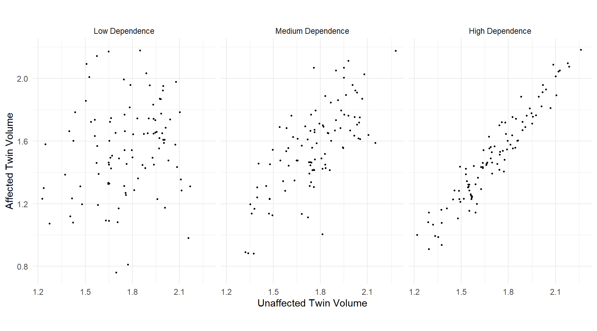

You can also download a PDF copy of this lecture.
| Pair | Unaffected | Affected | Difference |
|---|---|---|---|
| 1 | 1.94 | 1.27 | 0.67 |
| 2 | 1.44 | 1.63 | -0.19 |
| 3 | 1.56 | 1.47 | 0.09 |
| 4 | 1.58 | 1.39 | 0.19 |
| 5 | 2.06 | 1.93 | 0.13 |
| 6 | 1.66 | 1.26 | 0.4 |
| 7 | 1.75 | 1.71 | 0.04 |
| 8 | 1.77 | 1.67 | 0.1 |
| 9 | 1.78 | 1.28 | 0.5 |
| 10 | 1.92 | 1.85 | 0.07 |
| 11 | 1.25 | 1.02 | 0.23 |
| 12 | 1.93 | 1.34 | 0.59 |
| 13 | 2.04 | 2.02 | 0.02 |
| 14 | 1.62 | 1.59 | 0.03 |
| 15 | 2.08 | 1.97 | 0.11 |
| Size: | 15 | 15 | 15 |
| Mean: | 1.759 | 1.56 | 0.199 |
| SD: | 0.242 | 0.301 | 0.238 |
How would we make inferences if the samples are dependent, and how would we make inferences if the samples are independent?
| Pair | Age | Farthing | FHDI | FHDI | Farthing | Age | |
|---|---|---|---|---|---|---|---|
| 1 | 60 | W | 74.8 | 70.1 | W | 59 | |
| 2 | 108 | W | 96.2 | 45.1 | W | 109 | |
| 3 | 80 | E | 69.3 | 60.2 | E | 80 | |
| 4 | 43 | N | 96.9 | 76.3 | N | 43 | |
| 5 | 96 | S | 77.6 | 69.2 | S | 96 | |
| \(\vdots\) | \(\vdots\) | \(\vdots\) | \(\vdots\) | \(\vdots\) | \(\vdots\) | \(\vdots\) | |
| 100 | 98 | W | 70.5 | 49 | W | 95 |
| Pair | Smoker | Non-Smoker | Difference |
|---|---|---|---|
| 1 | 74.8 | 70.1 | 4.7 |
| 2 | 96.2 | 45.1 | 51.1 |
| 3 | 69.3 | 60.2 | 9.1 |
| 4 | 96.9 | 76.3 | 20.6 |
| 5 | 77.6 | 69.2 | 8.4 |
| \(\vdots\) | \(\vdots\) | \(\vdots\) | \(\vdots\) |
| 100 | 70.5 | 49 | 21.5 |
Suppose we have two samples, both of equal size \(n\) (so we’ll leave off the subscript). The standard error of \(\bar{x}_1-\bar{x}_2\) is \[ \underbrace{\sqrt{\frac{\sigma_1^2}{n} + \frac{\sigma_2^2}{n}}}_{\text{independent}} \ge \underbrace{\sqrt{\frac{\sigma_1^2}{n} + \frac{\sigma_2^2}{n} - \rho\frac{2\sigma_1\sigma_2}{n}}}_{\text{dependent}} = \frac{\sigma_d}{\sqrt{n}}. \] Here \(\sigma_d\) is the standard deviation of the differences of matched observations, and \(\rho\) is the correlation coefficient. The correlation coefficient can be between -1 and 1.
What does this imply about the standard errors for dependent versus independent samples?
Example: Suppose we had a matched-pairs design using genetically-related individuals (e.g., cousins, siblings, or identical twins) for a study like that that investigated the relationship between schizophrenia and left hippocampus volume. 
If two samples are independent, the standard error we have been using is \[ \sqrt{\frac{s_1^2}{n_1} + \frac{s_2^2}{n_2}}. \] An alternative is to use \[ s\sqrt{\frac{1}{n_1} + \frac{1}{n_2}}, \ \ \ \text{where} \ \ \ s = \sqrt{\frac{(n_1-1)s_1^2 + (n_2-1)s_2^2}{n_1 + n_2 - 2}}, \] and the degrees of freedom becomes \(n_1 + n_2 - 2\).
Why would we use this alternative standard error?